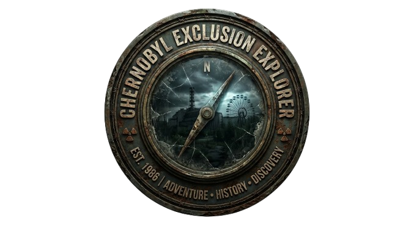
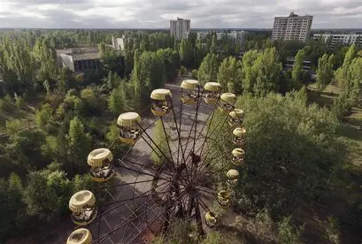

Itinerarios Técnicos Autorizados
Adéntrese en la quietud de Prípiat y los sectores restringidos de la Central Nuclear. Un recorrido de exploración histórica guiado bajo estrictas métricas de dosimetría activa y seguridad de campo.
Iniciar Exploración
Conoce la historia de la tragediaCada nivel de peligrosidad le permite acceder a capas más profundas de la historia y documentación del desastre.
¿Listo para su primera inmersión en la memoria?
Acceso a monumentos y zonas perimetrales. Ideal para entender las causas y el contexto geopolítico de 1986.
La historia está en los detalles. Vaya más allá.
Exploración de la arquitectura urbana de Prípiat. Acceso a archivos documentales preservados y estructuras habitacionales.
Acceso restringido. Solo para expertos documentales.
Inmersión en la zona cero: el Reactor 4 y el Bosque Rojo. Testimonio directo de la tecnología y el sacrificio humano.
Logística corporativa: Todo el equipamiento técnico mostrado es suministrado íntegramente por Chernobyl Exclusion Explorer. Garantizamos equipo certificado para que su única preocupación sea documentar la historia.
Nuestra plataforma regula el acceso técnico a los diferentes anillos de seguridad de la Zona de Alienación. Diseñamos rutas basadas en la preservación documental, permitiendo el estudio directo de la arquitectura soviética suspendida en el tiempo.
